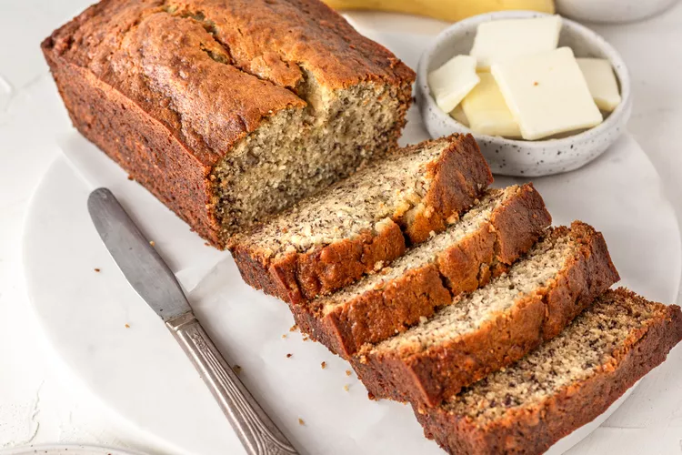

Banana Bread

Description
Delight in the comforting flavors of our homemade banana bread. Moist and
tender, each slice bursts with the natural sweetness of ripe bananas,
complemented by a hint of warm vanilla. With a golden-brown crust and a soft,
rich interior, this classic treat offers a perfect balance of sweetness and
texture, making it an irresistible snack or dessert.
Ingredients
- 2-3 Overripe Bananas
- 76g butter, melted
- 1/2 tsp baking soda
- 125g sugar
- 1 large egg, beaten
- 1tsp vanilla extract
- 205g flour
Instructions
- Preheat oven to 175 degrees. Butter an 8X4 inch loaf tin
- Mash the bananas until smooth and stir in the melted butter
- Mix in the baking soda, a pinch of salt, sugar, egg and vanilla.
- Add the flour and mix thoroughly until fully incorperated with no lumps
- Pour the batter into the loaf tin
- Bake for 55-65 minutes, until a toothpick inserted into the center comes out clean
- Leave to cool slightly in the tin, remove from tin and leave to cool further on a wire rack